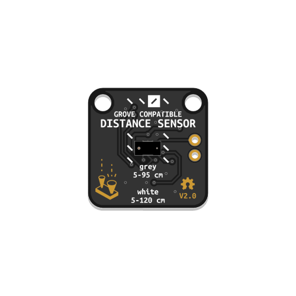
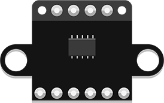
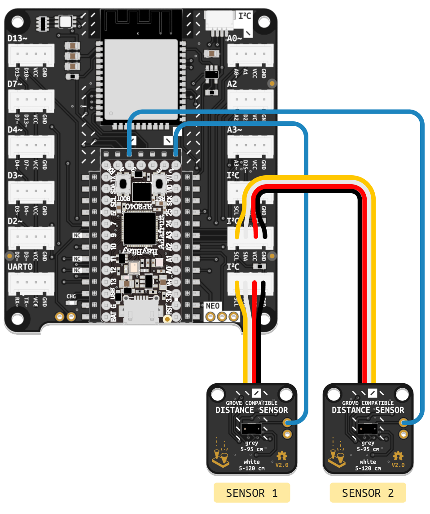

Detects the distance of objects directly in front of the sensor. Works best with white surfaces, for a range from 30 to 1200 mm. Works most reliably between 50 and 950 mm.
The sensor included in your kit may look like the one pictured above or like the one pictured here. Both versions are functionally identical. The information in this article is valid no matter which version you own.
Additional information is available on this page, discussing a similar component based on the same sensor.
Additional code examples are available here.
This Distance Sensor communicates with your microcontroller using a protocol called I²C. To work, it must be connected to a port labeled I²C on the BitsyExpander Board. You will need to include the adafruit_bus_device library in your code to read data via I²C and the adafruit_vl53l0x library to control the VL53L0X sensor itself.
These libraries should already be installed on the ItsyBitsy Microcontroller included in your kit, so you don’t need to worry about installing them yourself.
You can verify that these libraries are installed by ensuring a folder named adafruit_bus_device and a file called adafruit_vl53l0x.mpy are present in the lib folder of your CIRCUITPY drive. If not, download Adafruit’s Library Bundle for Version 8.x here. Extract the needed file and folder from the bundle and place them in the lib folder on your microcontroller. You can learn more about libraries and their use in the Glossary or the Tutorials.
Make sure to include busio and adafruit_vl53l0x in the imports section of your code to use the required libraries.
The first step to using the sensor is setting up the connection by creating an I2C object named i2c_port. Then, dist_sensor = adafruit_vl53l0x.VL53L0X(i2c_port) is used to create an instance of the sensor named dist_sensor and connected to i2c_port. In the example code below, this is done in the Variables section.
In the main loop, the print() function outputs distance readings retrieved from the sensor using dist_sensor.range, along with explanatory labels.
# --- Imports
import time
import board
import busio
import adafruit_vl53l0x
# --- Declarations
i2c_port = busio.I2C(board.SCL, board.SDA)
# --- Functions
# --- Setup
dist_sensor = adafruit_vl53l0x.VL53L0X(i2c_port)
# --- Main loop
while True:
print("Range:", dist_sensor.range, "mm")
time.sleep(0.1)
Some soldering is required to follow these instructions. If this is your first time soldering, begin by reading the Soldering Tutorial.
If following this tutorial with a microcontroller other than the one included in the Connected Interaction Kit, make sure it uses 3.3V logic. The XSHUT pin of the sensor cannot handle 5V logic and would need level shifting to work with 5V microcontrollers.
The I²C connectors on the BitsyExpander board all share the same two digital pins (SCL and SDA), as I²C is a communication protocol that enables multiple components to share the same so-called I²C bus. To organize communication, each device on the bus must have a unique address. Typically, unique addresses are assigned by default to different components. However, if you need to use multiple identical parts, they will all have the same default address, causing a conflict.

For example, the VL530X Distance Sensor’s default address is 0x29. To use more than one of them, their addresses must first be reassigned. This can be done in code by following these steps:
switch_to_output(value=False) configures the pins connected to XSHUT as outputs with a default value of False to turn off the sensors.xshut_sensor1.value = True, and initialized in the same manner as in the first example.set_address() function is used to change the sensor’s address.Note that these steps only need to be performed once, which is why they are performed in the code’s setup section. Once configured, the sensors can be used normally.
# --- Imports
import time
import board
import busio
import digitalio
import adafruit_vl53l0x
# --- Declarations
i2c_port = busio.I2C(board.SCL, board.SDA)
xshut_sensor1 = digitalio.DigitalInOut(board.D2)
xshut_sensor2 = digitalio.DigitalInOut(board.D3)
# --- Functions
# --- Setup
xshut_sensor1.switch_to_output(value=False)
xshut_sensor2.switch_to_output(value=False)
xshut_sensor1.value = True
dist_sensor1 = adafruit_vl53l0x.VL53L0X(i2c_port)
dist_sensor1.set_address(0x30)
xshut_sensor2.value = True
dist_sensor2 = adafruit_vl53l0x.VL53L0X(i2c_port)
dist_sensor2.set_address(0x31)
# --- Main loop
while True:
print((dist_sensor1.range, dist_sensor2.range))
time.sleep(0.1)
If you need more than three sensors or want to avoid soldering, consider using an I²C Multiplexer or configuring a second I²C bus instead.
Adafruit’s extensive learning resource on the I²C standard
Adafruit’s guide exploring methods to resolve I²C address conflicts